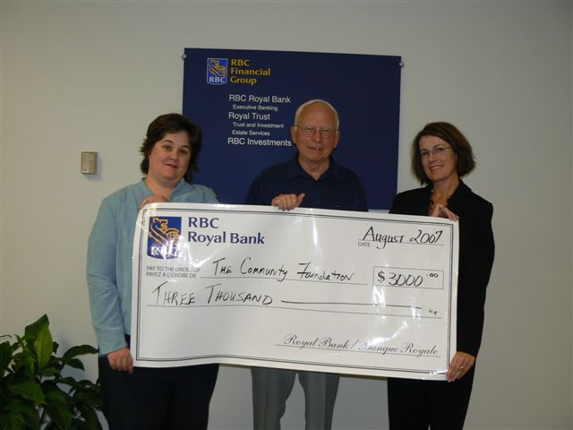
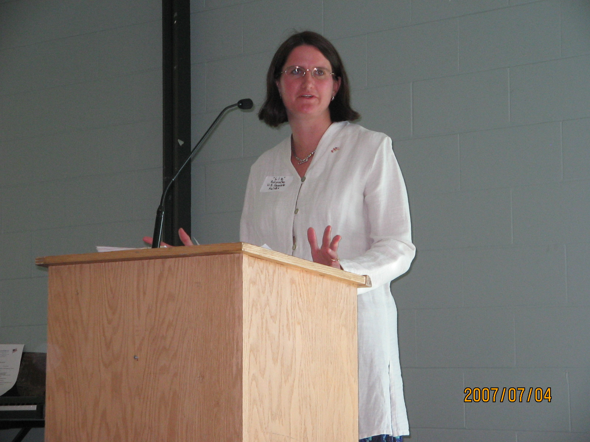

No. 74 September 22, 2007
IAHSP Donation

Shown above are Patricia Williams, on the left, and Mary MacInnis, on the right, of the RBC Royal Bank presenting a cheque to Don Glendenning of the Community Foundation of Prince Edward Island. The contribution is part of the RBC Royal Bank commitment to the Island Arts and Heritage Stabilization Program.
Agricultural Heritage Newsletter
The Agricultural Heritage initiative has entered a new phase. Two issues of the Agricultural Heritage Newsletter, in electronic form only, have now been published thanks to Charles Coles who is recently retired from the PEI Department of Agriculture. The focus of the initiative is on private collections of early agricultural equipment. Anyone interested in being on the mailing list should Email Charles at
charlescoles@eastlink.ca
_______________________________________
The Community Foundation News is an informal newsletter, in electronic form only, edited and published by, and at the whim of, Don Glendenning. Think of it as a letter from a friend. Forward this to others who may be interested. For further information, check our website, www.cfpei.ca or Email me at: don@glendenning.net
US Citizen’s Day

Shown above is US Consul. Elizabeth Swefler, addressing those in attendance at the second annual US citizens’ reception which was held at the Culinary Institute of Canada on July 4, 2007. Plans are already under way for another reception next year.
Vacancy
The departure of Bruce Lewis, one of our Directors, with his wife, Kay, for Yellowknife in the North West Territories leaves a vacancy on our Board.
Directors are drawn from across the Island. In addition to geographical representation, we try for a Board that represents a good cross section of Island life. Currently we are looking for someone with an accounting or financial background. We also have a number of people who serve on committees and as volunteers.
If you have an interest in any of the above, please let us know.